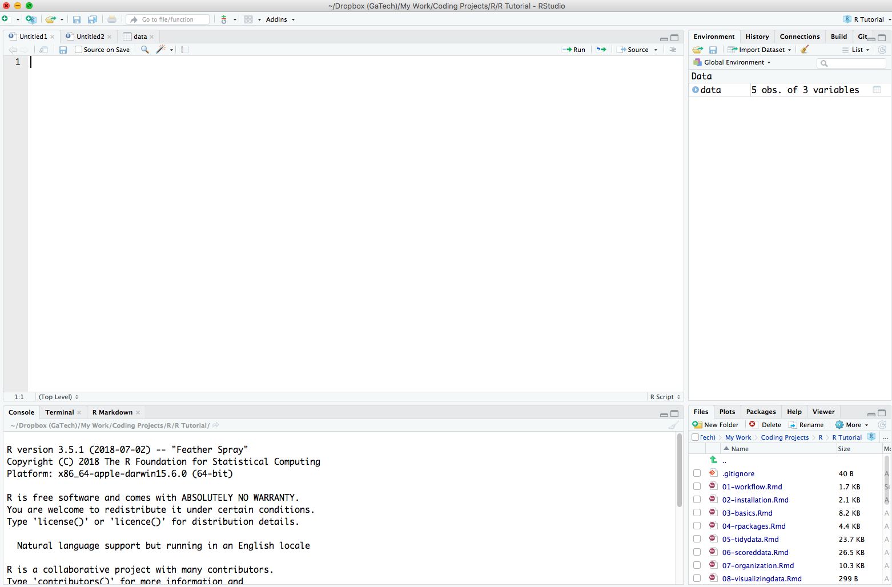
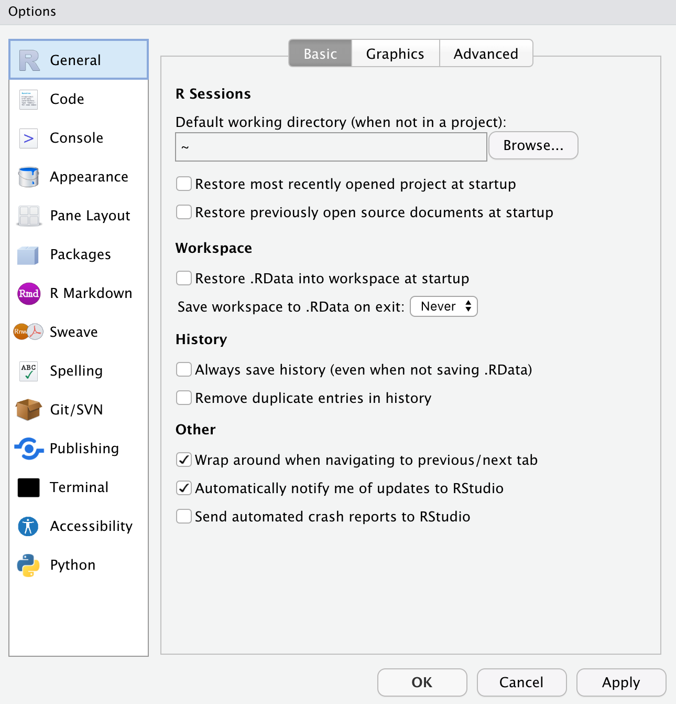

welcome_message <- "hello"1 Installs and Updates
R is the actual programming software that executes the code. RStudio is an environment for writing R scripts, Quarto documents, managing packages and projects, and much more. When you open RStudio, it will open a window to the R console within the RStudio environment.
If you already have R and RStudio installed move on to Updating R. If you have an R version older than 4.0.0 than you need to update R.
Install R
First you need to download the latest version of R from their website https://www.r-project.org
Select CRAN on the left, just under Download
Select the first option under 0-Cloud
Select the download option depending on your computer
Select the base installation (for Windows) or the Latest Release (for Mac)
Open and Run the installation file
Install R Studio
The easiest way to interact with R is through the R Studio environment. To do this you need to download R Studio
- Select the Free version of R Studio Desktop
- Select the download option depending on your computer
The RStudio Environment
Go ahead an open the RStudio application on your computer.
When you open a fresh session of RStudio there are 3 window panes open. The Console window, the Environment window, and the Files window. Go ahead and navigate to File -> New File -> R Script. You should now see something similar to the image below

There are 4 window panes and each one has it’s own set of tabs associated with it:
The Console window (the bottom left window pane) is where code is executed and output is displayed.
-
The Source window (the top left window pane) is where you will write your code to create a script file. When you open a new script file you will see a blank sheet where you can start writing the script. When you execute lines of code from here you will see it being executed in the Console window.
The Source window is also where you can view data frames you have just imported or created. In the image above, notice the different tabs in the Source window. There are two “Untitled” script files open and one data frame called ‘data’.
The Environment window (top right window pane) is where you can see any data frames, variables, or functions you have created. Go ahead and type the following in your Console window and hit enter.
You should now see the object welcome_message in the Environment window pane
- The Files window (the bottom right window pane) is where you can see your computer’s directories, plots you create, manage packages, and see help documentation.
RStudio Settings
I highly suggest changing the default RStudio General settings by going to Tools -> Global Options

You can also change the theme, font type, and font size, if you navigate to the Appearance tab in Settings. You may also like to change the organization of the RStudio window panes in Pane Layout.
Update R
If you already have R installed, but want to update it to the most current version follow these steps.
Warning: When updating R (not RStudio), it may remove all packages you have installed
First check what version of R you have installed.
Open RStudio
In the console window you will see the R version you are running (e.g., R version 4.1.0)
If you have an R version older than 4.0.0 than you should update R.
Run the following lines of code in your console window. This is an easy way to re-install all your currently installed packages. This step will save a list of packages to re-install later.
# Save current packages and their versions to object called ip
ip <- installed.packages()
ip
# Save the object as an .rds file
saveRDS(ip, "CurrentPackages.rds")Exit out of all R or RStudio windows
Download and install the latest version of R (see the section on installing R above)
Open RStudio
Check if your previously installed packages are installed using the Packages tab in the bottom right window
If you need to re-install your previous packages, then run the following lines of code
# After updating R, load the file and reinstall packages
ip <- readRDS("CurrentPackages.rds")
install.packages(ip[,1])Update R Studio
Go to Help -> Check for Updates